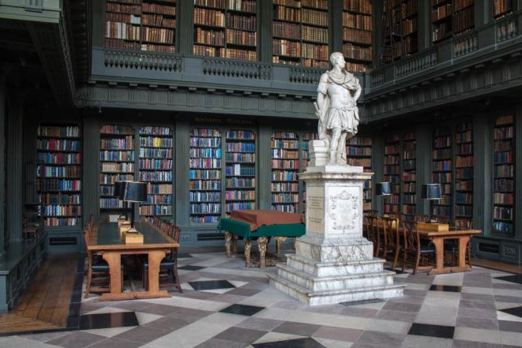

Libraries
Oxford meets the needs of its students, academics and the international research community with
a wide
range of library services provided by more than 100 libraries, making it the largest library system in the
UK.

Oxford Library